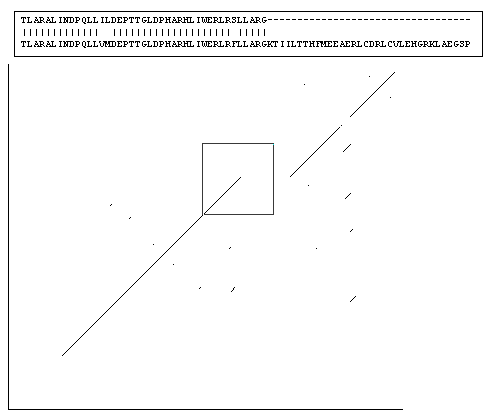

 Fig 4.6. A dotplot between two full length protein sequences. The section of alignment boxed at the top is the same area of the dotplot boxed in the center, where a large insertion in one of the sequence causes the diagonal to be offset towards the right. A sliding window size of 10 residues, and a threshold of 5 matches/window was used. |